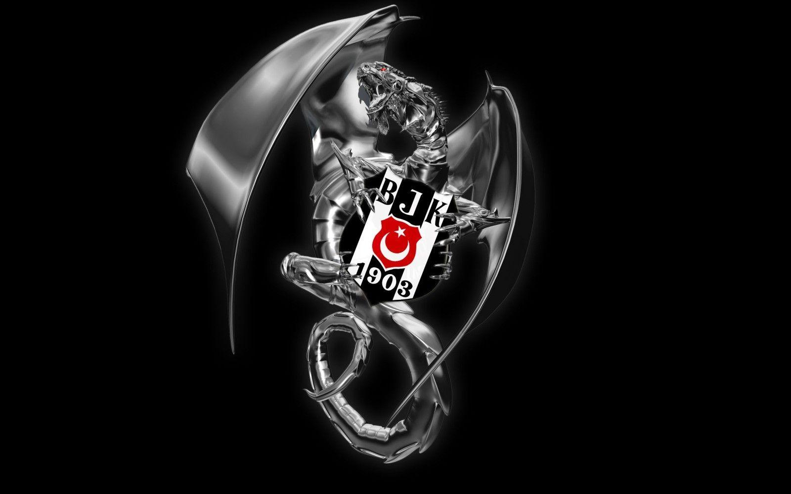
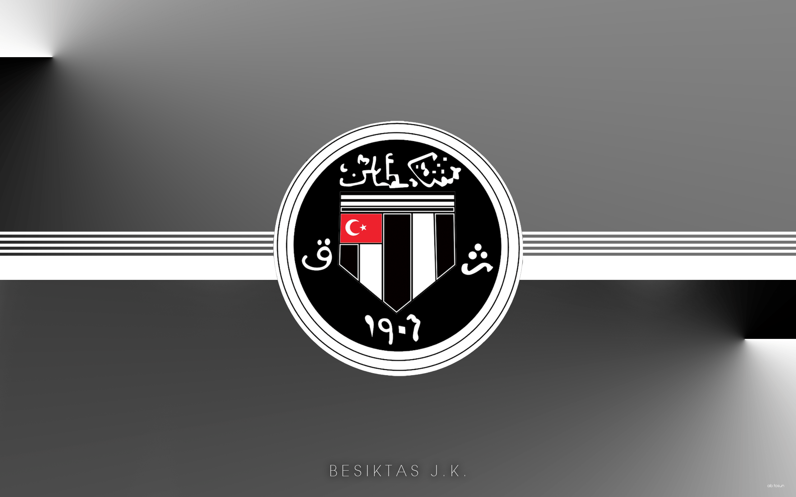
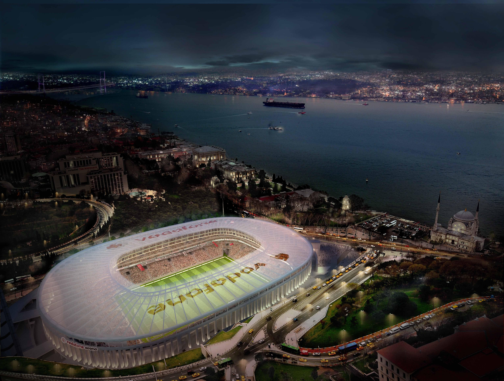
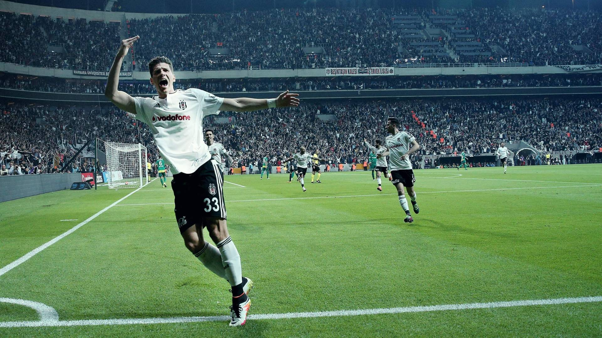

|
SİYAH |
 |
BEYAZ |
TARİHÇE:
BEŞİKTAŞ JİMNASTİK KULÜBÜ 1903 yılında İstanbul'da kurulan spor kulübüdür.
Bereket Jimnastik Kulübü adıyla kurulan kulüp, 26 Ocak 1911 tarihinde Beyoğlu Mutasarrıfı Muhittin Bey'in teşvikiyle
Beşiktaş Osmanlı Jimnastik Kulübü, adıyla tescil edilen ilk Türk spor kulübü oldu.
|

Beşiktaş kulübünün geçmişte kullandığı logo |
|

Beşiktaş'ın Stadı Vodafone Park |
Beşiktaş, armasında ay-yıldız taşıma izni verilen 3 Türk kulübünden biridir. Yurt içi ve yurt dışında gösterdiği performansı,
kazandığı kupalar ve ilkleriyle Türkiye'nin en büyük futbol kulüplerinden birisidir.
|
Vodafone Park 11 Nisan 2016 tarihinde Bursaspor maçı ile açıldı. Açılış maçını Kara Kartallar Gomez(2) ve Alexis'in golleriyle 3-2 kazandı.
|

Vodafone Park'taki ilk golü atan Gomez'in sevinci |